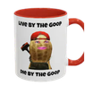

Fuel — a hit of motivation
Facts that actually move the needle

One plan, two portions. The whole game is moving calories toward protein and toward the morning — so the 10pm goblin never shows up. Little bit of goop, little bit of gains.
Caffeine cutoff ~2pm so sleep stays intact — bad sleep makes next-day hunger worse. Targets are estimates; let the scale over 2–3 weeks be the referee.
Eat protein within ~an hour of getting up. This is the lever that defuses the 10pm hunger — late-night starving is the symptom; skipping morning protein is the cause.
Breakfast and lunch are the big meals. Dinner is the smallest. Arrive at night already fed, not ravenous — the deficit then happens on autopilot.
Done eating after dinner. This gets easy, not hard, once rules 1 and 2 are in place — because you stopped manufacturing the hunger each morning.
An energy deficit is the only thing that drives fat loss — no diet beats another at equal calories. Protein (1.6–2.2 g/kg) + lifting is what makes the loss come from fat, not muscle. Keep the deficit moderate (~300–500 cal) so your body doesn't fight back and so you can actually sustain it. Earlier eating aligns with your circadian rhythm; late-night eating raises hunger hormones and hurts sleep.
Limiting: cheese, fried foods, alcohol, soda, white flour, ice cream.
Limiting: burgers, ice cream, fried food, alcohol.

Adds to the Extras list below. Ingredients from your own recipes show up automatically, tagged with the recipe they belong to.
Tap to check off — saves automatically and syncs to your partner. The from recipe tags show which dish each ingredient is for.
Ingredients you list here flow straight onto the Goop Run list, tagged with this recipe's name. Saves and syncs to both of you.
Weight syncs between both of you. Log a few times a week — watch the trend, not the daily wiggle. ~0.5–1 lb/week down = you're dialed. THAT'S MOTION BABY.
Log meals with estimated calories. Pick a saved recipe to auto-fill its calories, or type a one-off. Totals reset each day and sync to both of you. A fuller calorie database can slot in later.
Not seeing the scale move? This builds a summary of your real logged data — weights, activity, and habit streaks — that you can paste straight back into Claude for a tune-up. Pick who, copy, paste.